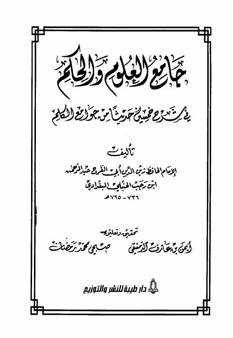

Downloads need an internet connection.
جامع العلوم والحكم في شرح خمسين حديثًا من جوامع الكلم- دار طيبة
Authors: ابن رجب الحنبلي
Editors: أيمن بن عارف الدمشقي صبحي محمد رمضان
Publishers: دار طيبة
**▫️ العنوان: جامع العلوم والحكم في شرح خمسين حديثًا من جوامع الكلم- دار طيبة** ▪️ المؤلف: #عبد_الرحمن_البغدادي_بن_رجب_الحنبلي ▫️ المحقق: #أيمن_بن_عارف_الدمشقي • #صبحي_محمد_رمضان ▪️ الناشر: #دار_طيبة_للنشر_والتوزيع ▫️ تاريخ النشر: 1431هـ 2010م ▪️ بلد النشر: الرياض، #السعودية ▫️ الطبعة: 2 ▪️ عدد الأجزاء: 2 ▫️ الصفحات: 864 ▪️ نوع الوعاء: #كتاب ▫️ التصنيف الرئيسي: #الحديث_وعلومه ▪️ التصنيف الفرعي: #المسانيد_الأخرى_والجوامع ۪